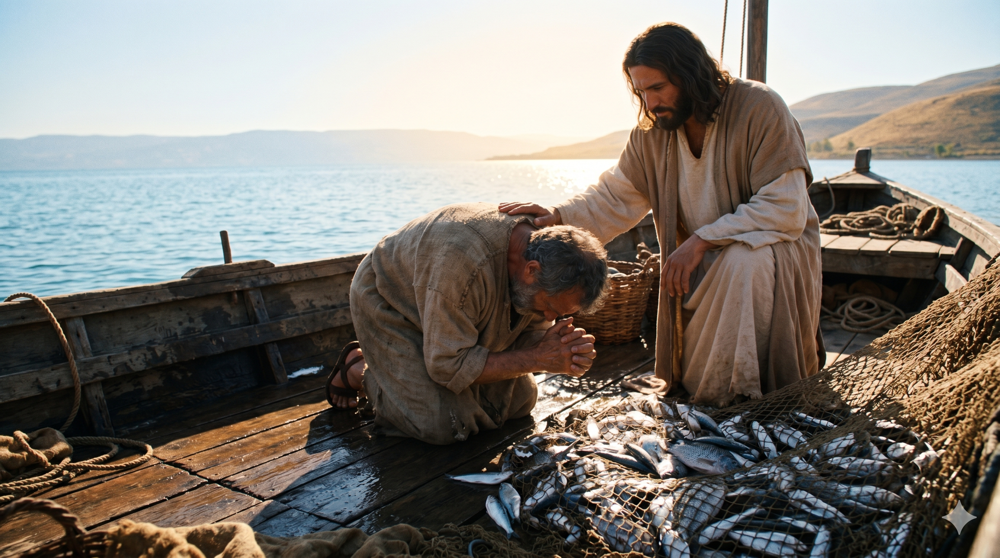

갈릴리 호숫가의 이른 새벽, 빈 그물을 모래사장 위에 펼쳐놓고 무릎 꿇어 그물을 씻는 한 어부 시몬 베드로. 그의 어깨 위로 한 분이 뒤에서 조용히 걸어오시고, 동쪽 호수 위로 떠오르는 첫 햇살이 두 사람의 그림자를 길게 모래 위로 드리운다. 일생을 호수 위에서 살아온 한 사람의 가장 평범한 한 새벽이, 일생을 영원히 다른 방향으로 돌려놓는 거룩한 한 새벽이 되는 침묵의 순간.
말씀을 마치시고 시몬에게 이르시되 깊은 데로 가서 그물을 내려 고기를 잡으라 시몬이 대답하여 이르되 선생님 우리들이 밤이 새도록 수고하였으되 잡은 것이 없지마는 말씀에 의지하여 내가 그물을 내리리이다 하고 그렇게 하니 고기를 잡은 것이 심히 많아 그물이 찢어지는지라 … 시몬 베드로가 이를 보고 예수의 무릎 아래에 엎드려 이르되 주여 나를 떠나소서 나는 죄인이로소이다 … 예수께서 시몬에게 이르시되 무서워하지 말라 이제 후로는 네가 사람을 취하리라 하시니 그들이 배들을 육지에 대고 모든 것을 버려 두고 예수를 따르니라 — 누가복음 5:4–6, 8, 10–11
갈릴리 호숫가의 한 새벽이었습니다. 시몬 베드로는 밤새 그물을 던졌으나 한 마리의 고기도 잡지 못한 채, 빈 그물을 씻으러 모래사장에 앉아 있었습니다. 그의 마음은 아마 어부의 자존심 한구석이 무너진 채 무겁게 가라앉아 있었을 것입니다 — "어떻게 한 마리도 없을 수 있단 말인가." 그때 한 분이 다가오셔서 그의 배에 오르시고는, 호숫가에 모인 사람들에게 말씀을 가르치십니다. 베드로는 그분의 말씀을 한 자도 빠짐없이 들었을 것입니다. 그러나 가르침이 끝난 후, 그분이 베드로를 향해 직접 던지신 한 마디가 그의 가슴을 흔듭니다 — "깊은 데로 가서 그물을 내려 고기를 잡으라"(눅 5:4). 한밤중에도 잡지 못한 고기를, 한낮에 다시 잡으라고 하신 그 말씀. 어부의 모든 경험과 직관에 정면으로 어긋나는 한 마디였습니다.
베드로의 첫 응답이 인상적입니다 — "선생님 우리들이 밤이 새도록 수고하였으되 잡은 것이 없지마는 말씀에 의지하여 내가 그물을 내리리이다"(눅 5:5). 그는 자기 경험을 정직하게 말합니다 — "잡은 것이 없습니다." 그러나 그 정직한 무력감 위에 한 마디를 더 얹습니다 — "말씀에 의지하여." 한 어부의 일생의 경험이 한 분의 한 마디 앞에 자기 자리에서 한 발자국 옆으로 비켜선 그 순간, 그 한 자리에서 그물이 찢어지도록 가득 찬 한 그물의 기적이 일어납니다(눅 5:6). 그러나 더 깊은 기적은 그 다음에 일어납니다 — 베드로가 그 가득 찬 그물 앞에 무릎을 꿇고 외칩니다. "주여 나를 떠나소서 나는 죄인이로소이다"(눅 5:8). 한 사람이 가장 큰 풍요 앞에서 가장 깊은 자기 죄를 본 그 거룩한 모순. 그분의 영광이 그의 가슴 안쪽 가장 어두운 자리를 한 줄기 빛으로 비춘 것입니다. 그리고 그 빈 자리 위에 그분의 한 마디가 부드럽게 내려앉습니다 — "무서워하지 말라 이제 후로는 네가 사람을 취하리라"(눅 5:10).

한 분의 무릎 아래로 엎드린 한 어부의 거친 손, 그의 곁으로 가득 찬 그물에서 흘러내리는 은빛 물고기들이 햇빛에 반짝인다. 가장 큰 풍요 앞에서 가장 작아진 한 사람 — "주여 나를 떠나소서 나는 죄인이로소이다." 그 한 마디 위로 한 분의 따뜻한 손이 그의 어깨에 조용히 얹힌다.
우리는 자주 자신의 빈 그물을 들고 인생의 한 새벽 앞에 무겁게 앉아 있습니다 — "밤새 수고하였으나 잡은 것이 없습니다." 그 빈 손이 부끄러워 누군가에게 정직하게 보여 주기 어려운 한 새벽들이 우리 인생에는 너무나 많이 있습니다. 그러나 베드로의 한 새벽이 우리에게 가르쳐 주는 한 가지가 있습니다 — 그분은 결코 비어 있는 그물 곁을 빈손으로 지나가시지 않습니다. 그분은 비어 있는 그 자리로 일부러 다가오셔서, 그 빈 그물 위에 한 마디를 얹어 주십니다. "깊은 데로 가서 그물을 내려라." 한 가지 — 우리의 빈 손이 부끄러운 자리가 아니라, 그분의 한 마디가 가장 잘 들리는 자리라는 것을 기억하십시오. 가장 무거운 한 새벽은, 사실 가장 거룩한 한 새벽의 시작입니다.
또 한 가지 — 베드로의 한 마디 "말씀에 의지하여"(눅 5:5)는 우리 신앙의 모든 결정의 한 자리입니다. 우리는 자기 경험과 직관을 가지고 살아갑니다 — 그것은 좋은 일입니다. 그러나 한 분이 우리의 경험과 직관에 정면으로 어긋나는 한 마디를 주실 때가 있습니다. 그 순간, 우리는 두 가지 가운데 하나를 골라야 합니다 — 자기 경험에 머무를 것인가, 그 한 마디에 자기 경험을 한 발자국 비켜 줄 것인가. 베드로는 비켜 주었습니다. 그리고 그 한 비켜섬 위에서, 그의 일생이 영원히 다른 방향으로 돌아갔습니다. 오늘 당신의 가슴 안쪽에 한 분이 주신 한 마디 — 당신의 경험과 어긋나기에 자꾸만 외면하고 있는 그 한 마디 — 가 있다면, 한 번 정직하게 그 마디 앞에 자기 그물을 내려 보십시오. 그 자리에서 한 그물 가득한 풍요와 한 영혼의 가장 깊은 거룩한 무릎 꿇음이 함께 찾아올 것입니다.
밤새 잡지 못한 빈 그물 곁에 그분이 일부러 다가오십니다.
당신의 가장 무거운 한 새벽이, 사실은 가장 거룩한 한 새벽의 시작입니다.
오늘, 당신의 경험에 어긋나는 그분의 한 마디 앞에 자기 그물을 한 번 내려 보십시오.